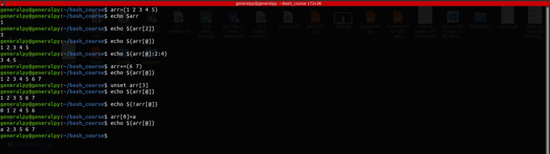

A simple variable can only store a single value which can be hard to work when working with similar type of data and want to operate on that data at once.
Arrays are special variables which can store multiple values of any type. We can store multiple values in a single variable.
Syntax :
name=(space_separated_values)
Each value in an array has an index which shows its position in the array. Array indexes start with 0 and go till (length of array - 1).
When we echo out the array variable, by defualt it returns 0th item of the array.
We can accesss individual indices of array using sqaure bracktes and putting index inside the square brackets.
${array[index]}To access whole array at once we can use @ in placeof index.
We can also access some part of array instead of whole array using the syntax below.
${array[@]:start:end}To add elements to the end of array use += operator with array.
array+=(values)
To remove an element from array, use uset command.
unset array[index]When removing an element like this, indices are not arranged sequentially after the removal. Imagine we have array of 4 elements and removed element at index 1 then resulting indices will be 0 2 3.
To see indices of elements use ! before that array in parameter expansion.
To change a value at a given index use variable assignment with an index.
array[index]=new_value
